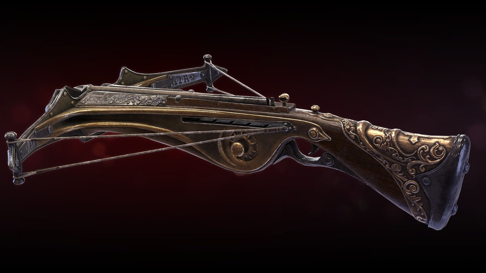
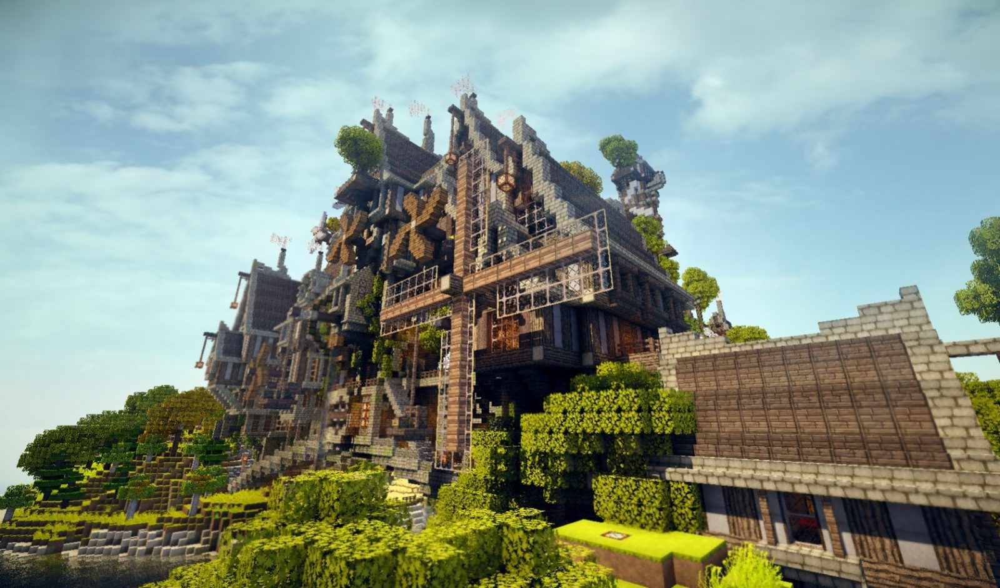

Описание
DungeonCraft
RPG игра с глубоким нелийненым сюжетом
Сюжет
DungeonCraft - это мир приключений, магии, добра и зла. В результате аппокалипсиса, вызванного древним божеством "Элдором" Земля стала непригодна для жизни. На земле отпечатались места, покрытые магией. А вместе с ней и зло, которое затмило весь небосвод. И только одиннадцать Избранных смогли остановить древнее зло, заперев его в тюрьму, пожертвовав собою. И вот, спустя пять столетий, произошло то, чего боялись все. Зло вырвалось наружу, и остановить его смогут только Избранные. Но кто же это? Кто сможет противостоять ему? Может быть одним из них окажешься именно ты?
Подробное описание
DungeonCraft - это фентезийный мир, соединяющий в себе различны механики: за основу проекта были взяты механика майнкрафта, такие как строительство в режиме песочницы для создания пользовательских карт и локаций, а также строений и прочих структур. А боевая система, механики веса, предметов, существ и кастомизация персонажа полностью переделаны под подземелья и драконы. В игру добавлена библиотека для создания карт гейм-мастером с уже готовыми струкрутами и ландшафтами для создания локаций, которыми могут пользоваться все игроки. Вы также можете создать свою библиотеку и сохранять туда свои постройки для личного пользования или же опубликовать её, чтобы другие игкроки тоже могли использовать выши постройки. Так вы покажете другим пользоватеялям свои творчесие навыки и поможете улучшить игровой процесс. В DungeonCraft имеется возможность создавать приватные карты для игры друзьями, вплоть до 5 игроков, влючая гейм-мастера. Куда приятнее играть в кругу знакомых людей, ведь так вы получите наиболее комфортный игровой опыт.
- 
Локации
Игровой мир крайне огромен и может быть ограничен лишь фантазией гейм-мастера. Он может быть наполнен как интересными местами, в которых так и хочется походить, порассматривать, так и местами столь красивыми, что порой хочется просто сесть и полюбоваться видами. А такая возможность есть: вы можете сесть в любом месте, отключить весь ненужный HUD и любоваться прекрасными просторами мира DungeonCraft.
-

- 
-